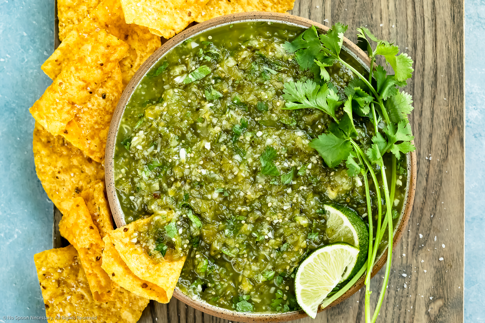

Salsa verde (spicy green salsa)

An easy condiment to add a bit of life to your dishes
A spicy, bright salsa that is an essential to keep in the fridge. Add it to meat, on your tacos or eggs, or simply use it to help you get through that bag of torilla chips you keep in the cupboard.
Ingredients
- 1 800g can of tomatillos
- 1 jalapeno
- 1/2 white onion
- 5 garlic cloves
- 2 limes
- 1 teaspoon of ground cumin
- 1 teaspoon of ground coriander
- Kosher salt to taste
- Cracked black pepper to taste
- 1 handful of coriander
Recipe
This is a simple one:
- Place all the ingredients into a blender and blend to your desired consistency. If you need it a little looser add in some water or even olive oil (but not too much)